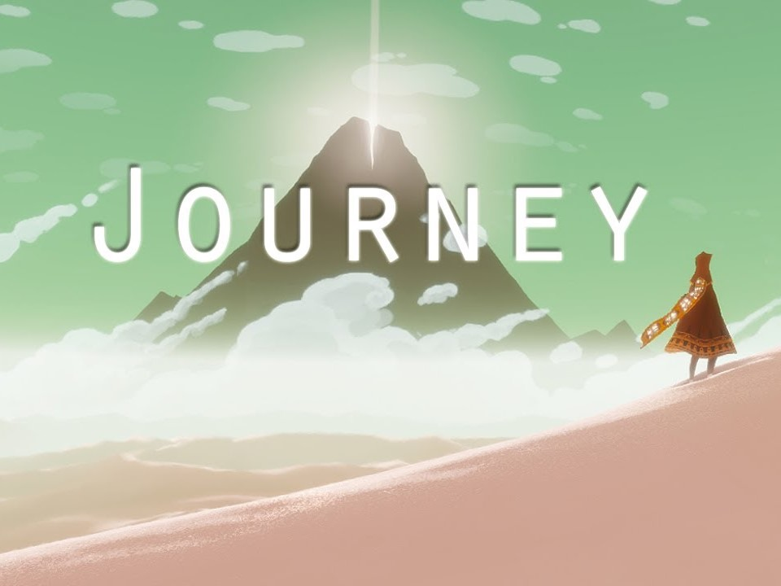
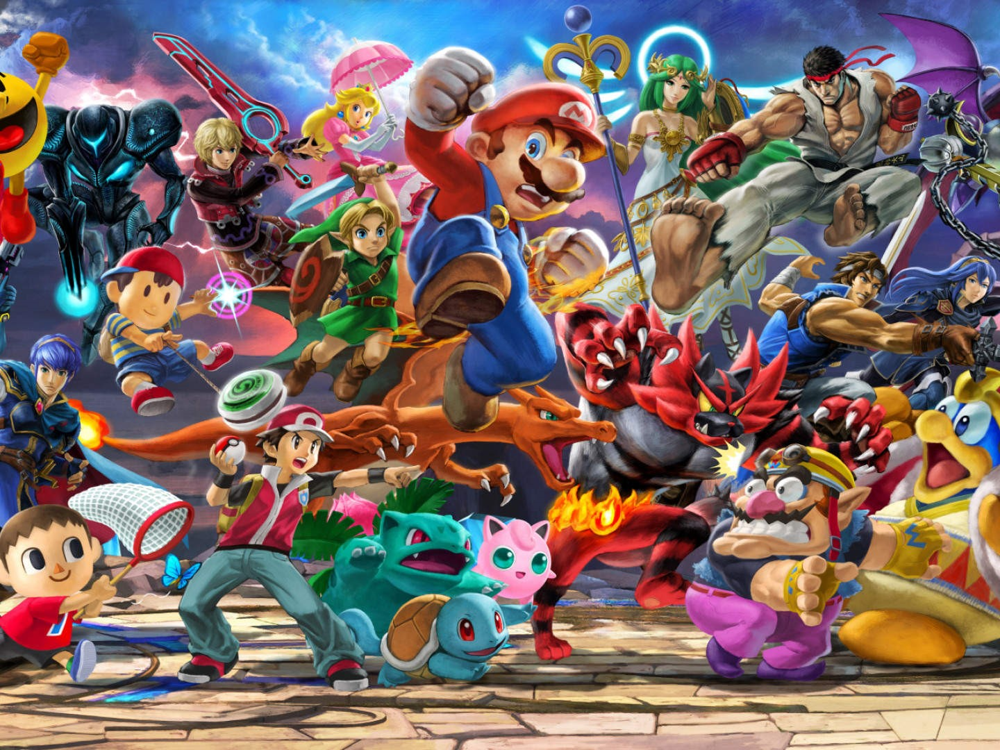
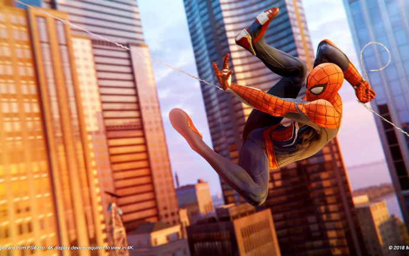
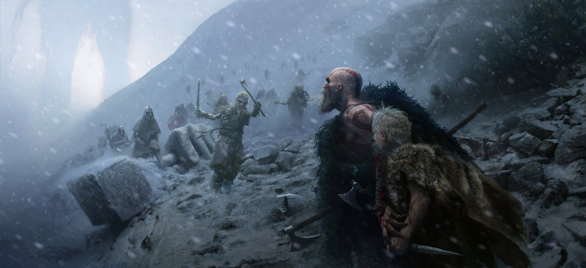
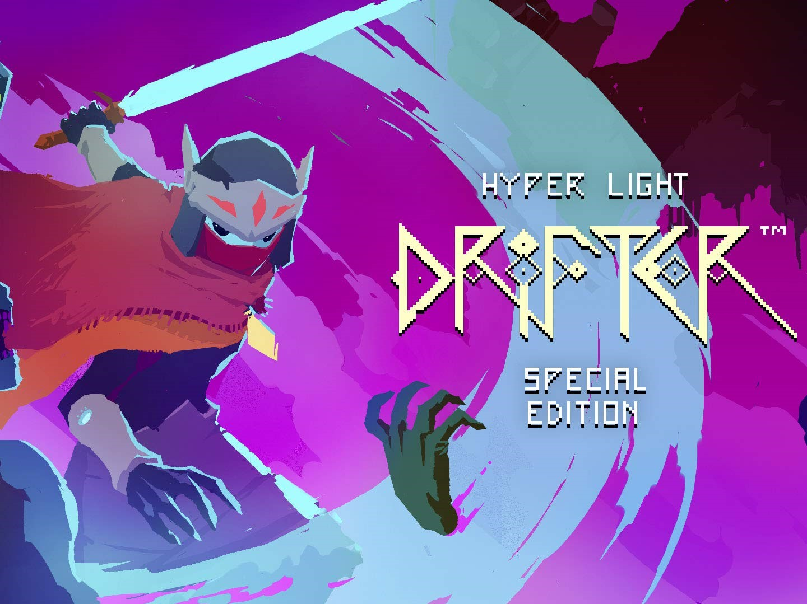

ARCHIVE / REVIEWS
The Witcher 3: Blood and Wine
The Blood and Wine artwork from the original gaming collection, revisited in the archive.
ARCHIVE EDITION / 2018–2019
THE SUPER REVIEW ARCHIVE
Original review excerpts and preserved homepage selections. Historical writing is labeled; no new scores have been added.
ARCHIVE / REVIEWS
The Blood and Wine artwork from the original gaming collection, revisited in the archive.

ARCHIVE / REVIEWS
A quieter corner of the original archive: Journey and the artwork that made its homepage tile stand out.

ARCHIVE / REVIEWS
Revisit the Super Smash Bros. imagery from the original Super Review homepage.

ARCHIVE / REVIEWS
One of the original student-written review excerpts, now with more room for its screenshots and text.

ARCHIVE / REVIEWS
The original God of War excerpt and image gallery from the 2018 Super Review collection.

ARCHIVE / REVIEWS
An indie-game image from the original collection, now part of the refreshed archive.
No matching stories. Try another game name or clear your search.